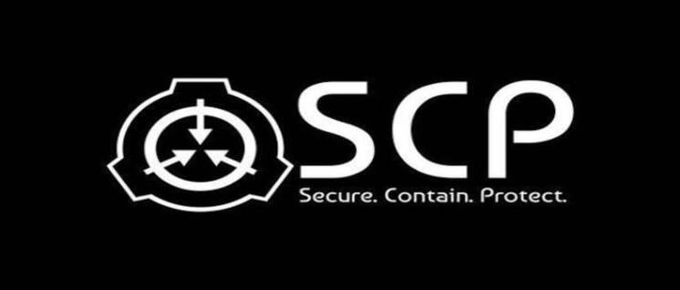
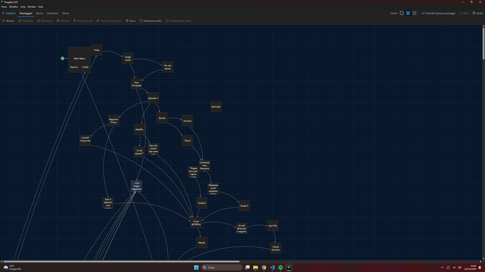
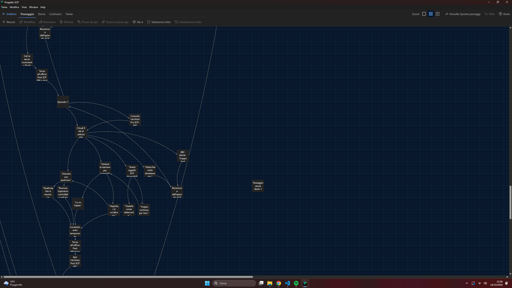
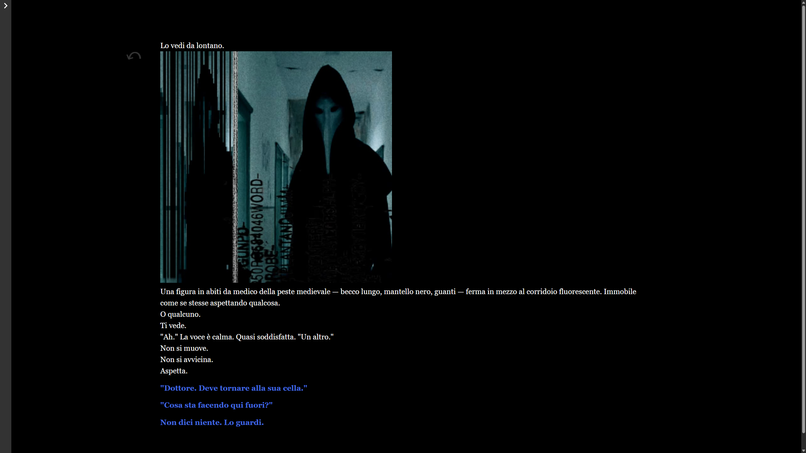
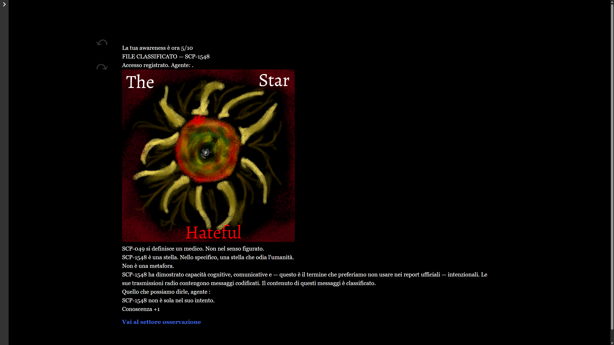

← Back to Narrative Design

SCP Project
Branching interactive fiction across seven episodes, with four distinct endings.
The concept
A branching interactive fiction game built in Twine, set in the SCP universe. I wrote an original story, told in episodes (seven in total, with four distinct endings). In every episode the player makes choices that shape where the story goes, and the people in it remember what you did.
My role
I wrote the whole story and its branching structure, and designed the systems that make choices matter:
- Wrote seven branching episodes
- Designed the variables that shape each ending
- Four distinct endings based on player choice
How the choices work
- Awareness points. The first choice of the game sets the tone: consult the archive, or not. Consulting raises your awareness score. Reaching a certain amount is useful to move the plot forward, but going past it risks sending the player’s choices into a downward spiral. Curiosity helps, up to a point.
- Different weights of choice. Many choices are light and conversational. Others carry real moral weight. Some are deadly.
- Timed choices. In the sequences where adrenaline is at its highest, choices run on a timer, so the tension grows with the clock.
- Characters that remember. The main characters, SCP-999 among them, remember what you chose, and that changes how the story ends.
Challenges
- Making awareness a real tension: rewarding curiosity while making excess costly.
- Keeping choices meaningful across seven episodes, so that each ending follows from what the player did.
- Making timed choices feel urgent without feeling unfair.
- Tracking the variables in Twine, and keeping the world consistent with the SCP source material.
Outcome
The project is in revision.
Gallery — screenshots & gifs



